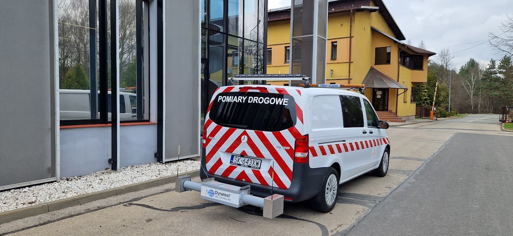
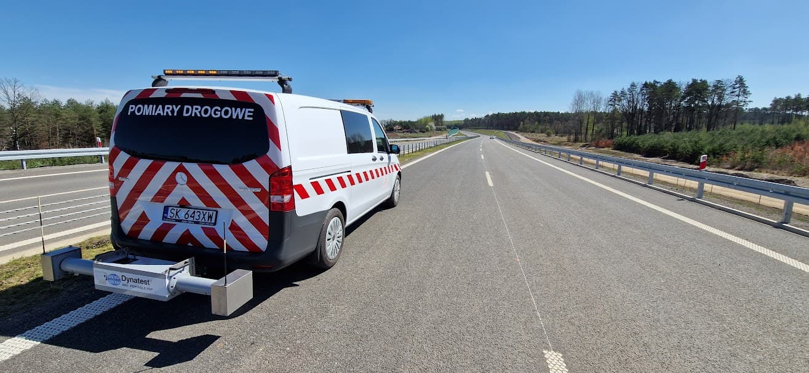

Równość podłużna nawierzchni - profilograf laserowy
Równość podłużna nawierzchni – badanie profilografem laserowym
Równość podłużna to jeden z kluczowych parametrów oceny jakości nawierzchni drogowej. Wpływa na komfort jazdy, bezpieczeństwo oraz trwałość drogi.
Na czym polega badanie?
Pomiar wykonuje się specjalistycznym pojazdem wyposażonym w profilograf laserowy. Czujniki laserowe mierzą zmiany wysokości nawierzchni, a system zapisuje dane w czasie rzeczywistym.

Sprzęt pomiarowy
- Profilograf laserowy z czujnikami i akcelerometrami
- System rejestracji danych
Jak przebiega badanie?
- Przygotowanie i kalibracja sprzętu
- Przejazd pomiarowy po nawierzchni
- Obliczenie wskaźnika IRI
- Analiza i raport z pomiarów

Wskaźnik IRI
IRI (International Roughness Index) to wskaźnik równości podłużnej. Dla nowo wybudowanych nawierzchni powinien wynosić poniżej 1,8 mm/m.

Zastosowanie wyników
- Odbiór inwestycji drogowych
- Monitoring stanu technicznego dróg
- Planowanie napraw i modernizacji
Wniosek: Badanie profilografem laserowym pozwala precyzyjnie ocenić jakość nawierzchni i jest standardem w nowoczesnej diagnostyce drogowej.